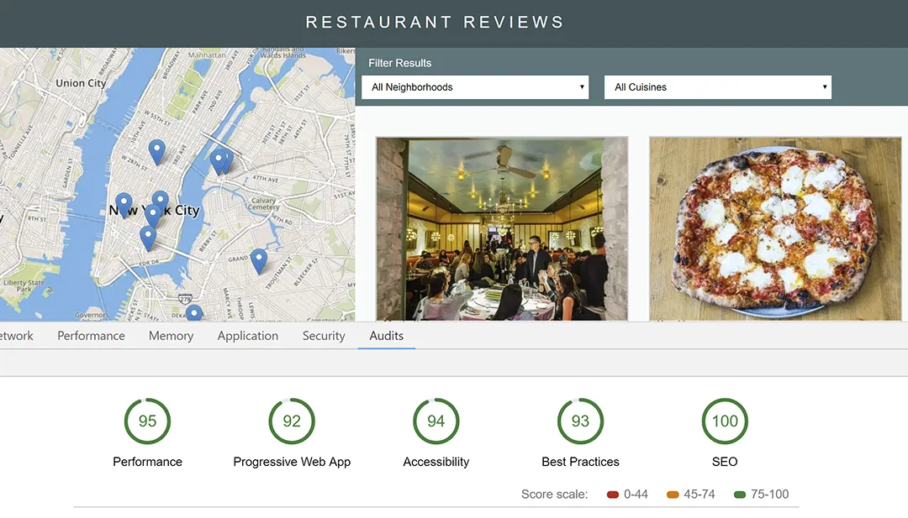
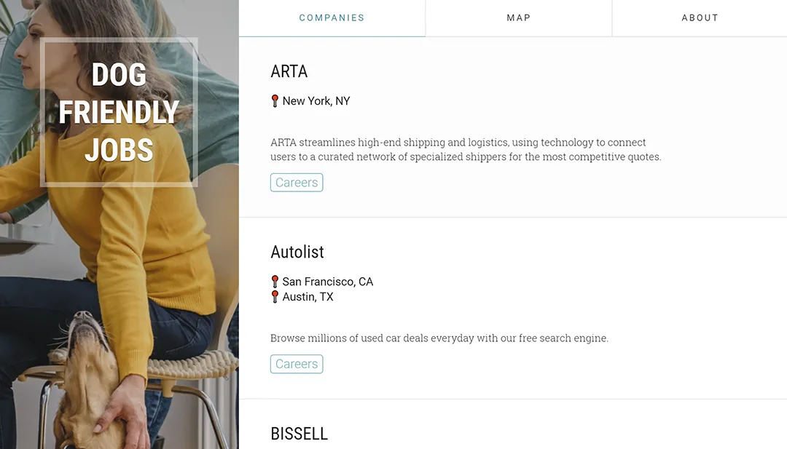
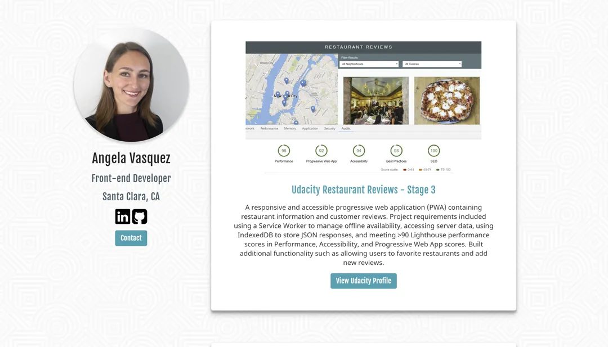
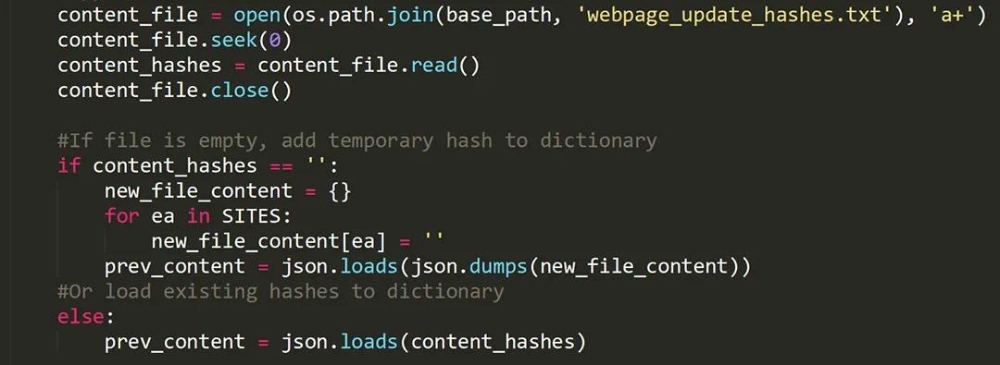
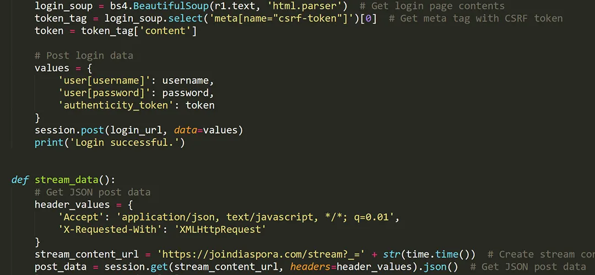
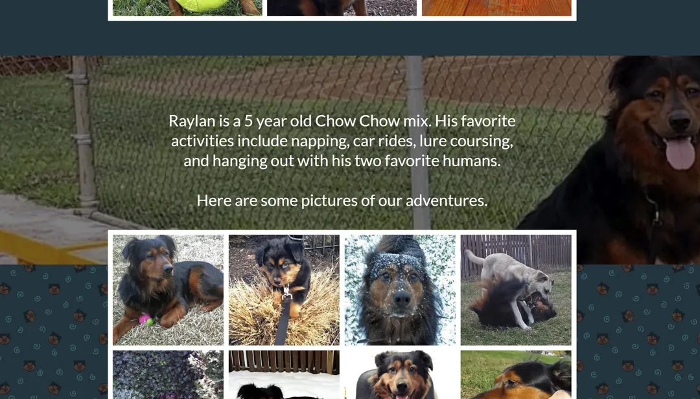

Udacity Restaurant Reviews - Stage 3
A responsive and accessible progressive web application (PWA) containing restaurant information and customer reviews. Project requirements included using a Service Worker to manage offline availability, accessing server data, using IndexedDB to store JSON responses, and meeting >90 Lighthouse performance scores in Performance, Accessibility, and Progressive Web App scores. Built additional functionality such as allowing users to favorite restaurants and add new reviews.
This site was the final graduation requirement from Udacity's Mobile Web Specialist Nanodegree.
View Udacity Profile

Dog Friendly Jobs
A website built with Django showing a collection of companies that allow dogs in their offices. The site uses a Service Worker for static resource caching and offline management and IndexedDB to store the company listing data. The site is hosted with PythonAnywhere.
Visit Site
View on GitHub

Personal Portfolio Site
My personal website built from scratch using HTML5 and CSS3. The site is a fully responsive Progressive Web Application and meets Lighthouse audit scores >90 for Performance, Accessiblity, and Progressive Web App.
Visit Site

Monitor Website Changes with Automated SMS Alerts
Python script to track website changes and send text messages with change notifications. The script uses hashing to store a record of page content, Python Requests library, JSON, and Twilio API to send text messages.
View On GitHub

Diaspora Web Scraper
Python script to scrape and analyze posts from Diaspora. Gathers most recent 100 posts and finds the most active user by posts and most active post by likes, comments, and reshares. The script uses Python libraries Requests and Beautiful Soup to extract post data. The script automates site login including CSRF token management.
View On GitHub

Raylan.dog Site
Raylan.dog is a single page gallery site to share pictures and videos of Raylan the dog. This site is mainly used for JavaScript experimentation, focusing on integrating and customizing third party plugins. JavaScript functionality includes a custom splash screen, photo lightbox, lazy loading images, and randomized image gallery.
Visit Site
View on GitHub